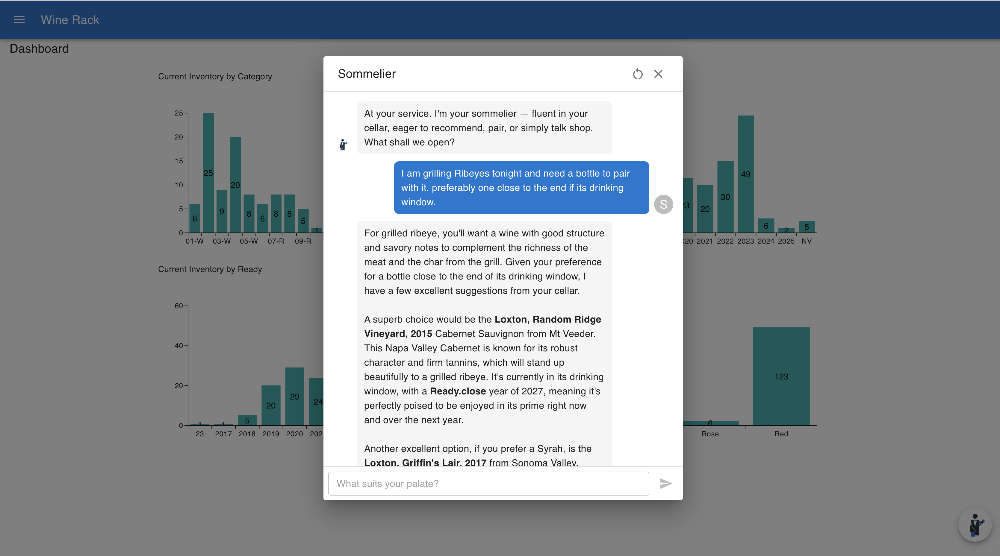

Wine Rack
A multi-tenant wine inventory tracker built on the MERN stack, featuring an orchestrated system of specialized agents powered by Gemini 2.5 Flash/Pro.
Wine Rack allows users to manage and track their cellar inventory, with data visualizations like interactive charts and tables, and services like document-uploads for storing tasting notes.